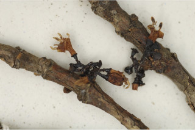
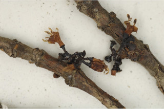

Trees up to 15 m tall.
15 ಮೀ. ಎತ್ತರದವರೆಗಿನ ಗಾತ್ರದ ಮರಗಳು.
Trees up to 15 m tall.
மரங்கள் 15 மீ. உயரம் வரை வளரக்கூடியது.
Trunk fluted; bark pale grey, prominently fissured.
ಕಾಂಡ ಕೊರಕಲುಗಳ ಸಮೇತವಿರುತ್ತವೆ;ತೊಗಟೆ ಬೂದು ಬಣ್ಣ ಹೊಂದಿದ್ದು, ಪ್ರಮುಖವಾಗಿ ಸೀಳಿರುತ್ತದೆ.
Trunk fluted; bark pale grey, prominently fissured.
மரத்தண்டு குறுக்குவெட்டுத் தோற்றத்தில் ஒழுங்கற்ற வளையமானது; மரத்தின் பட்டை வெளிறிய சாம்பல் நிறமானது, வலைப்பின்னல் பிளவுகளுடையது.
Young branchlets quadrangular, glabrous; apical bud usually exudes yellow resin.
ಎಳೆಯ ಕಿರುಕೊಂಬೆಗಳು ಚತುಷ್ಕೋನಯಕ್ತವಾಗಿರುತವಾಗಿರುತ್ತವೆ,ರೋಮರಹಿತ -ವಾಗಿರುತ್ತವೆ; ಅಂಕುರ ಮೊಗ್ಗು ಸಾಮಾನ್ಯವಾಗಿ ಹಳದಿ ಬಣ್ಣದ ಅಂಟು ದ್ರವನ್ನು ಒಸರುತ್ತದೆ.
Young branchlets quadrangular, glabrous; apical bud usually exudes yellow resin.
சிறிய நுனிக்கிளைகள் குறுக்குவெட்டுத் தோற்றத்தில் நான்கு கோணங்களுடையது, உரோமங்களற்றது; நுனியிலுள்ள மொட்டு மஞ்சள் நிற ரெசீன் சுரக்ககூடியது.
Leaves simple, opposite, decussate; stipules narrow triangular to 0.7 cm long, glabrous; petiole 0.6-1.5 cm long, slightly canaliculate above, glabrous; lamina 5-10 x 1.5-3.5 cm, elliptic to elliptic-obovate, apex acuminate with blunt tip, base attenuate, margin entire, chartaceous, glabrous beneath, hairy domatia present at axils of secondary_nerves; midrib raised above; secondary_nerves 5-6 pairs; tertiary_nerves horizontally reticulo-percurrent.
ಎಲೆಗಳು ಸರಳವಾಗಿದ್ದು ಕತ್ತರಿಯಾಕಾರದ ಅಭಿಮುಖ ಜೋಡನಾ ವ್ಯವಸ್ಥೆಯಲ್ಲಿರುತ್ತವೆ, ಕಾವಿನೆಲೆಗಳು ಸಂಕುಚಿತ ತ್ರಿಕೋನಾಕಾರದಲ್ಲಿದ್ದು 0.7 ಸೆಂ.ಮೀ ವರೆಗಿನ ಉದ್ದ ಹೊಂದಿರುತ್ತವೆ;ತೊಟ್ಟು 0.6 –1.5 ಸೆಂ.ಮೀ.ವರೆಗಿನ ಉದ್ದವಿದ್ದು, ಸ್ವಲ್ಪಮಟ್ಟಿಗೆ ಮೇಲ್ಭಾಗದಲ್ಲಿ ಕಾಲುವೆ ಗೆರೆಯನ್ನು ಹೊಂದಿರುತ್ತದೆ ಹಾಗೂ ರೋಮರಹಿತವಾಗಿರುತ್ತವೆ; ಪತ್ರಗಳು 5 -10 X 1.5 – 3.5 ಸೆಂ.ಮೀ. ಗಾತ್ರ ಹೊಂದಿದ್ದು, ಅಂಡವೃತ್ತದಿಂದ ಅಂಡವೃತ್ತ-ಅಂಡದವರೆಗಿನ ಆಕಾರ ಹೊಂದಿದ್ದು, ಮೊಂಡಾಗ್ರವುಳ್ಳ ಕ್ರಮೇಣ ಚೂಪಾಗುವ ತುದಿ, ಒಳಬಾಗಿದ ಬುಡ, ನಯವಾದ ಅಂಚು ಹೊಂದಿದ್ದು ಕಾಗದವನ್ನೋಲುವ ಮೇಲ್ಮೈ ಹೊಂದಿದ್ದು ತಳಭಾಗದಲ್ಲಿ ರೋಮರಹಿತವಾಗಿರುತ್ತವೆ ಮತ್ತು ಎರಡನೇ ದರ್ಜೆಯ ನಾಳಗಳ ಅಕ್ಷಾಕಂಕುಳಿನಲ್ಲಿ ರೋಮಸಹಿತವಾದ ಸೂಕ್ಷ್ಮ ಸಹಜೀವಿ ಗೂಡುಗಳ ಸಮೇತವಿರುತ್ತವೆ;ಮಧ್ಯನಾಳ ಪತ್ರದ ಮೇಲ್ಭಾಗದಲ್ಲಿ ಉಬ್ಬಿರುತ್ತವೆ;ಎರಡನೇ ದರ್ಜೆಯ ನಾಳಗಳು 5 ರಿಂದ 6 ಜೋಡಿಗಳಿದ್ದು;ಮೂರನೇ ದರ್ಜೆಯ ನಾಳಗಳು ಲಂಬರೇಖೆಗೆ ಸಮಕೋನದಲ್ಲಿರುತ್ತವೆ ಮತ್ತು ಜಾಲಬಂಧ ವಿನ್ಯಾಸ ಹೊಂದಿದ್ದು ಎಲೆ ದಿಂಡಿಗೆ ಅಡ್ಡವಾಗಿ ಕೂಡುವಂತಹವುಗಳು.
Leaves simple, opposite, decussate; stipules narrow triangular to 0.7 cm long, glabrous; petiole 0.6-1.5 cm long, slightly canaliculate above, glabrous; lamina 5-10 x 1.5-3.5 cm, elliptic to elliptic-obovate, apex acuminate with blunt tip, base attenuate, margin entire, chartaceous, glabrous beneath, hairy domatia present at axils of secondary_nerves; midrib raised above; secondary_nerves 5-6 pairs; tertiary_nerves horizontally reticulo-percurrent.
இலைகள் தனித்தவை, எதிரடுக்கமானவை, குறுக்குமறுக்கானவை; இலையடிச்செதில் குறுகிய முக்கோணமானது, 0.7 செ.மீ. நீளமானது, உரோமங்களற்றது; இலைக்காம்பு 0.6-1.5 செ.மீ. நீளமானது, குறுக்குவெட்டுத் தோற்றத்தில் சிறிது கேனாலிகுலேட், உரோமங்களற்றது; இலை அலகு 5-10 X 1.5-3.5 செ.மீ., நீள்வட்ட வடிவானது முதல் நீள்வட்டம்-தலைகீழ் முட்டை வடிவானது, அலகின் நுனி சிறிது அதிக்கூரியதுடன் அதன் முனை மழுங்கியது, அலகின் தளம் அட்டனுவேட், அலகின் விளிம்பு முழுமையானது, சார்ட்டோசியஸ், உரோமங்களற்றது, உரோமங்களுடைய டொமேசியா நரம்புகளின் கோணங்களில் உடையது; மையநரம்பு மேற்புறத்தில் அலகின் பரப்பைவிட உயர்ந்து இருக்கும்; இரண்டாம் நிலை நரம்புகள் 5-6 ஜோடிகள்; மூன்றாம் நிலை நரம்புகள் விளிம்பு நோக்கிய வலைப்பின்னல்-பெர்க்கரண்ட் போன்றவை.
Inflorescence small cymes; flowers polygamodioecious, sessile.
ಪುಷ್ಪಮಂಜರಿಗಳು ಸಣ್ಣ ಗಾತ್ರದ ಮಧ್ಯಾರಂಭಿ ಮಾದರಿಯವು;ಹೂಗಳು ಸಂಕೀರ್ಣಲಿಂಗಿಗಳಾಗಿದ್ದು ಗಂಡು ಮತ್ತು ಹೆಣ್ಣುಹೂಗಳು ಪ್ರತ್ಯೇಕ ಸಸ್ಯಗಳಲ್ಲಿರುತ್ತವೆ,ತೊಟ್ಟುರಹಿತವಾಗಿರುತ್ತವೆ.
Inflorescence small cymes; flowers polygamodioecious, sessile.
மஞ்சரி சிறிய சைம் வகை மஞ்சரி; மலர்கள் பாலிகோமொடையீசியஸ், காம்பற்றது.
Berry, ovoid or globose; seed many, irregularly compressed, slightly rugose.
ಬೆರ್ರಿಗಳು ಅಂಡ ಅಥವಾ ಗೋಳಾಕಾರದಲ್ಲಿರುತ್ತವೆ;ಬೀಜಗಳ ಸಂಖ್ಯೆ ಹಲವಾರು ಇದ್ದು ಅನಿಯತವಾಗಿ ಸಂಕುಚಿತವಾಗಿರುತ್ತವೆ ಮತ್ತು ಸ್ವಲ್ಪ ಮಟ್ಟಿಗೆ ಸುಕ್ಕು ಸುಕ್ಕಾದ ಮೇಲ್ಮೈ ಹೊಂದಿರುತ್ತವೆ.
Berry, ovoid or globose; seed many, irregularly compressed, slightly rugose.
முழுச்சதைகனி (பெர்ரி), முட்டை வடிவானது அல்லது கோள வடிவமானது; விதைகள் எண்ணற்றது, ஒழுங்கற்ற தட்டையானது, சிறிது சுருக்கங்களுடையவை (ருக்கோஸ்).


 
